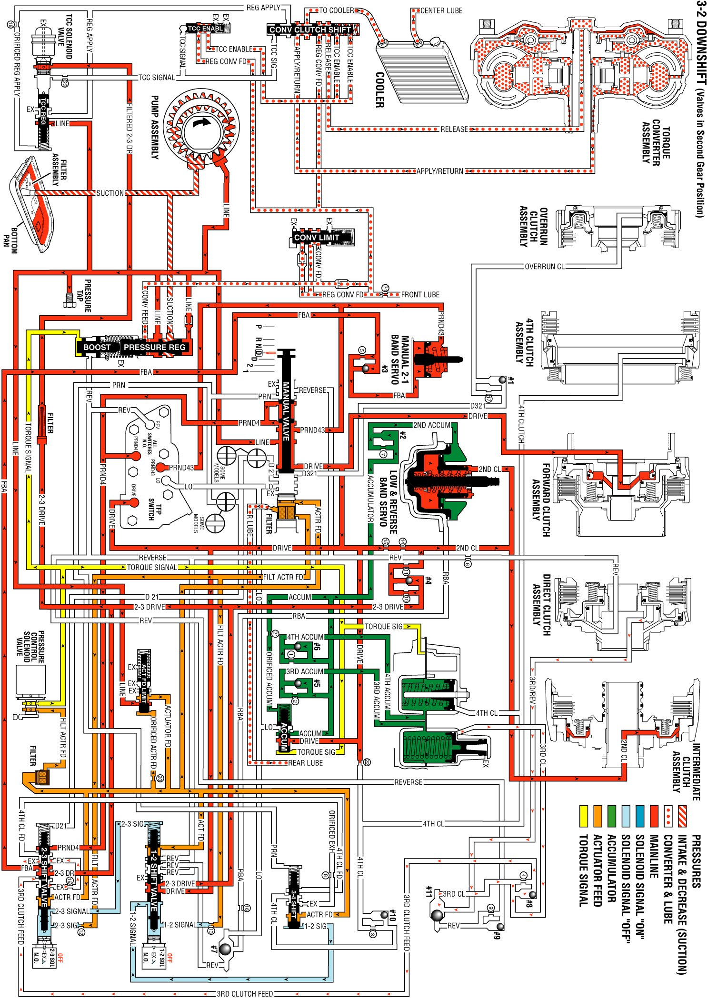

Overdrive Range, 3-2 Downshift
Overdrive Range, 3-2 Downshift
In order to obtain the 3-2 downshift, the PCM receives an input signal from the TP Sensor at increased throttle openings. This causes the PCM to de-energize the 2-3 Shift Solenoid (SS) Valve.
1-2 Shift Solenoid (1-2 SS) Valve
When the 1-2 SS valve de-energizes, spring force holds the 1-2 shift valve to the extreme right.
2-3 Shift Solenoid (2-3 SS) Valve
When the 2-3 SS valve de-energizes, 2-3 signal fluid pressure exhausts at the solenoid. This allows a spring force to move the 2-3 shift valve to the extreme right.
2-3 Shift Valve
The third clutch feed pressure from the 2-3 shift valve is shut off and an exhaust port is opened at the 2-3 shift valve. This exhausts the third clutch fluid as the fluid exits the third clutch accumulator. This causes the direct clutch to release, shifting the transmission into second gear.
Direct Clutch
Exhausting third clutch fluid unseats the #8 checkball. This allows for a rapid exhausting of the third clutch apply fluid at the 2-3 shift valve.
Third Clutch Accumulator
As fluid exhausts from the third clutch accumulator, fluid also exhausts through the unseated #8 check valve and exhausts at the 2-3 shift valve.
Overdrive Range, 3-2 Downshift
